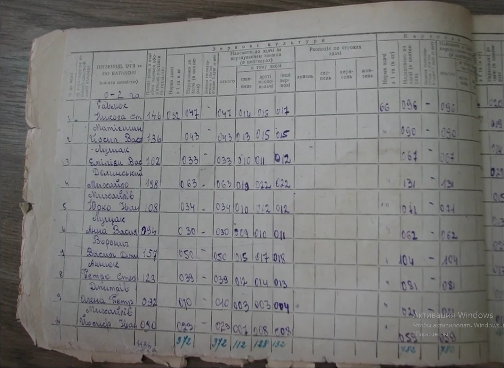
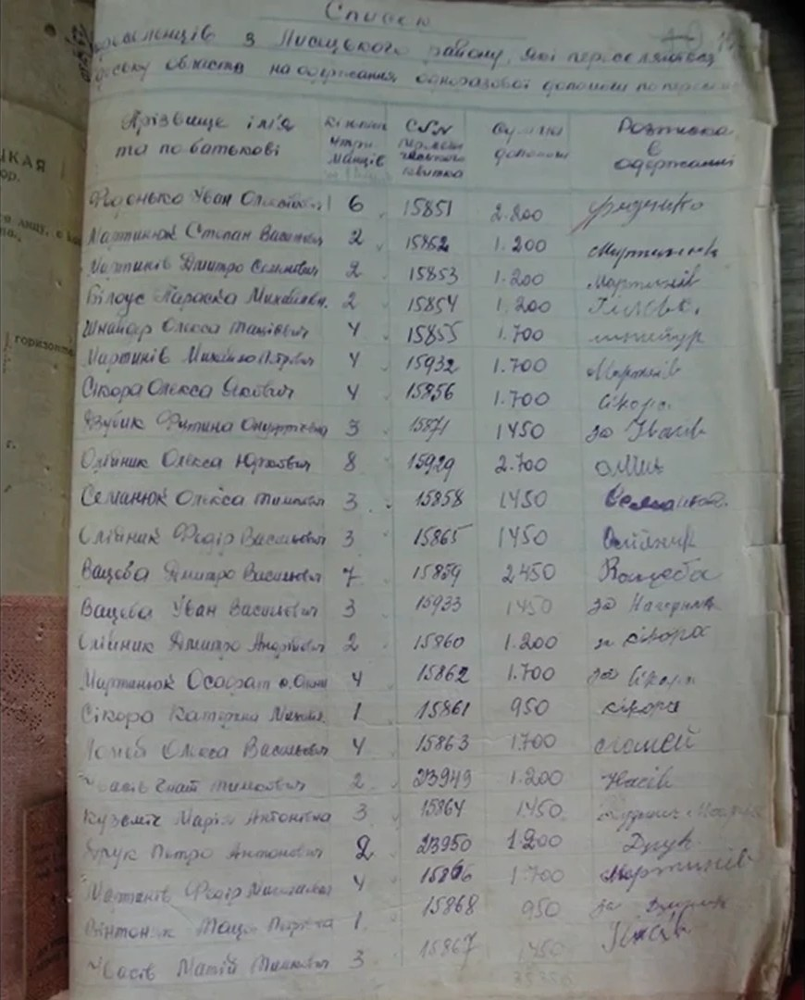
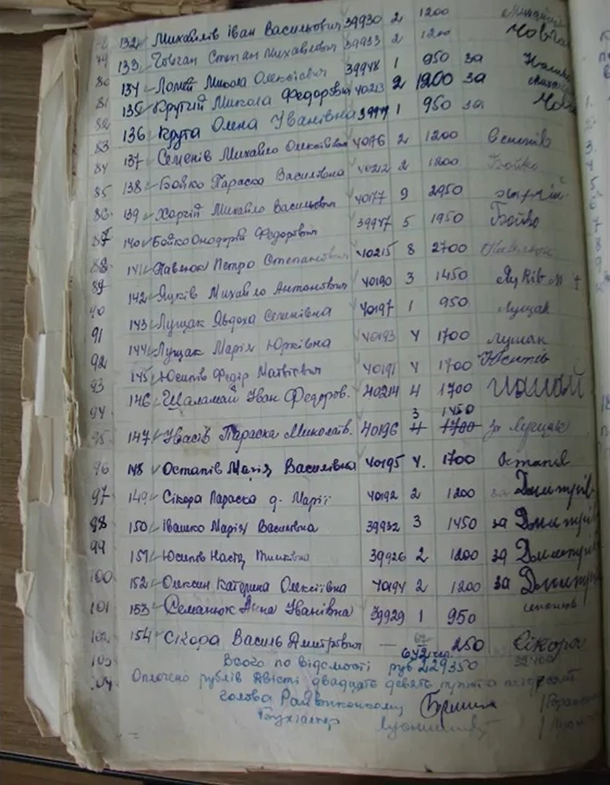
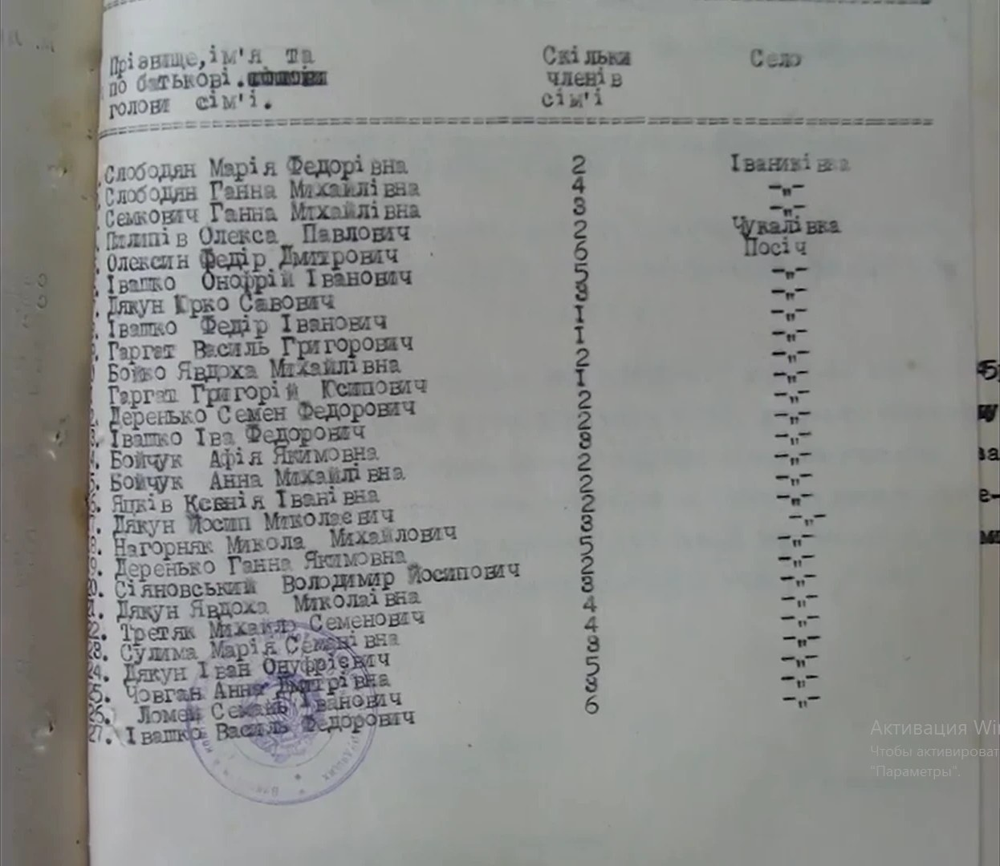
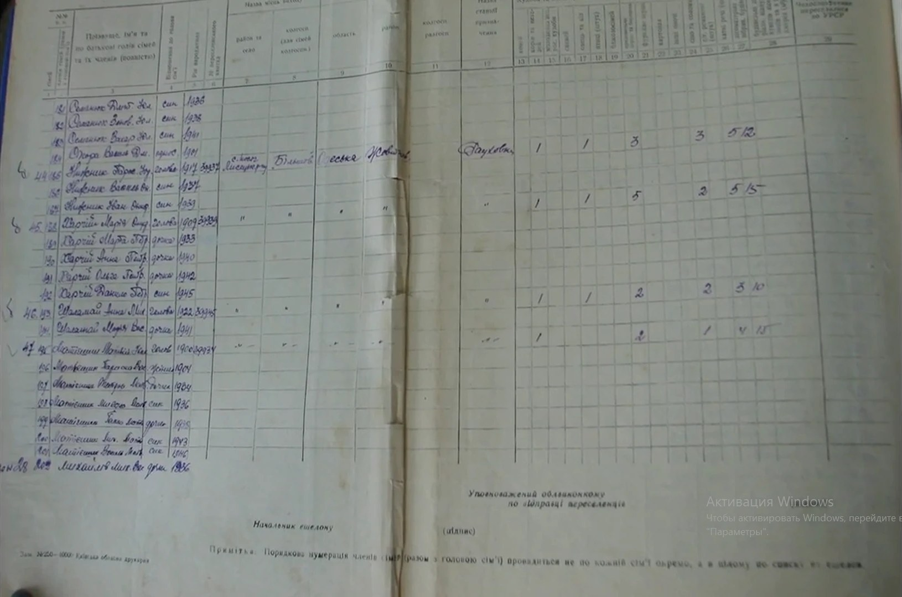

| Поле | Дані |
|---|---|
| Назва | «Посіч: депортована, але не знищена» |
| Посилання | https://www.youtube.com/watch?v=1Bqt7R1jtI4 |
| Автор ідеї | Софія Шепетуха |
| Автори | Софія Шепетуха, Андрій Яворський. Безпосередніх контактів авторів не знайдено. |
| Диктори | Ольга Котюк, Андрій Таньків, Михайло Качанський |
| Оператор | Світлана Гаєвська |
| Режисер | Роман Турелик |
| Підтримка | Federal Foreign Office (Germany), Robert Bosch Stiftung, MitOst, «Інша Освіта» |
| У рамках | «Студія живої історії» (до неї належить Софія Шепетуха) |
| Про показ | https://report.if.ua/lyudy/u-frankivsku-pokazaly-film-pro-deportovane-selo-posich/ |
Контакти зібрано для подальшого зв'язку. За умовами завдання самостійно нікому не пишемо, листування лише після погодження.
| Особа / організація | Роль | Контакти |
|---|---|---|
| «Студія живої історії» / ГУРТ, «Інша Освіта» | Організація, у рамках якої знято фільм | Сайт: https://www.gurt.org.ua/ E-mail: info@gurt.org.ua Facebook: https://www.facebook.com/gurt.org.ua Telegram: t.me/gurtrc Instagram: @gurtrc Співробітниця: oslavska@insha-osvita.org, тел. 066 77 341 61 |
| Тамара В'ячеславівна Галицька (нове прізвище Галицька-Дідух) | Кандидатка історичних наук; викладає в Католицькому ліцеї святого Василія Великого та в Карпатському національному університеті ім. В. Стефаника | tamara.halytska@cnu.edu.ua Деканат історичного ф-ту: dekanat_istor@cnu.edu.ua, +38 (0342) 59-61-07 Ліцей: info@stbasilschool.org.ua, +380 (67) 377 45 68, +380 (342) 752 439, м. Івано-Франківськ, вул. Шевченка, 11 Університет: https://cnu.edu.ua, office@cnu.edu.ua |
| Назар Розлуцький | Історик-дослідник; працює в Музеї української діаспори (Київ) | Facebook (закритий профіль): https://www.facebook.com/nazar.rozlutskiy/ Вікіпедія: https://uk.wikipedia.org/wiki/Назар_Розлуцький Музей: https://diaspora.com.ua/ |
| Таймкод | Зміст |
|---|---|
| 0:00 – 1:42 | Вступ |
| 1:42 – 2:35 | Структура УПА |
| 2:35 – 4:15 | Співпраця з УПА |
| 4:16 – 9:36 | Боротьба з радянською владою |
| 9:37 – 13:34 | Створення проєкту виселення |
| 13:35 – 15:47 | Процес виселення |
| 15:48 – 21:18 | Повернення |
| 21:18 – 22:31 | Кінець |
| Кадр / документ | Запис | Дані |
|---|---|---|
| 13:34 — друкований список голів сімей (с. Посіч) | Івашко Федір Іванович | 1 член сім'ї |
| 13:34 — той самий список | Івашко Іва Федорович | 2 члени сім'ї |
| 12:45 — третій список (відомість одноразової допомоги переселенцям Лисецького р-ну) | № 150 — Івашко Марія Василівна | Переселенський квиток № 39932 (прочитання попереднє), 3 члени сім'ї, 1450 крб; у графі розписки — «за Дмитрів» |
У тому ж друкованому списку (13:34) видно ще два записи з прізвищем Івашко: Івашко Онуфрій Іванович і № 27 Івашко Василь Федорович. Кількість членів цих сімей у кадрі прочитати однозначно не вдається (цифри зміщені відносно рядків, нижні рядки закриває печатка), тому їх треба перевірити за оригіналом.
• «Реабілітовані історією. Івано-Франківська область» — багатотомне видання з поіменними довідками про репресованих, зокрема виселених.
• Група УПА «Говерля». Літопис УПА, том 18. Торонто: Літопис УПА, 1990, с. 119 (PDF).
Прочитання імен у рукописних документах попереднє й потребує звірки з оригіналом або зі сканом у кращій якості. Напис «Активация Windows» на кадрах з'явився під час запису екрана і до документів не належить.

Розграфлена книга обліку поставок господарств групи «0–2 га»: прізвище, ім'я, по батькові, площа, норма здачі, нараховано до здачі зернових (пшениця, інші продовольчі, зернові), картопля. Серед записів: Павлюк Микола Ст., Матієшин Йосип Вас., Лущак Емілія Вас., Долинський Михайло, Михайлів Юрко Ів., Лущак Анна Вас., Воронич Василь Дм., Анисюк Петро Ст., Дмитрів Олена Петр., Михайлів Йосип Ів. Прізвища Івашко в цьому кадрі немає.

Заголовок: «Список переселенців з Лисецького району, які переселяються за межі області, на одержання одноразової допомоги по пере[селенню]». Графи: прізвище, ім'я та по батькові; кількість членів сім'ї; № переселенського квитка; сума допомоги; розписка в одержанні. Серед записів: Фединко Іван, Мартинюк Степан, Мартинів Дмитро, Білоус Параска, Сікора Олекса, Олійник Олекса, Семанюк Олекса, Вацеба Дмитро, Вацеба Іван, Сікора Катерина, Ломей Олекса, Кузьмич Марія та ін. Квитки мають номери 158xx, окремі 239xx.

Записи № 132–154 з номерами переселенських квитків 399xx–402xx, кількістю членів сім'ї та сумою допомоги. № 150 — Івашко Марія Василівна (квиток 39932, 3 члени сім'ї, 1450 крб). Також: Михайлів Іван Васильович, Човган Степан Михайлович, Ломей Микола Олексійович, Бойко Параска Василівна, Харчій Михайло Васильович, Бойко Онуфрій Федорович, Павлюк Петро Степанович, Яцків Михайло Антонович, Лущак Явдоха Семенівна, Шаламай Іван Федорович, Останів Марія Василівна, Семанюк Анна Іванівна, Сікора Василь Дмитрович. Підсумок: «Всього по відомості руб. 229 350»; підписи голови райвиконкому та бухгалтера.

Машинописний список: прізвище, ім'я та по батькові голови сім'ї; скільки членів сім'ї; село (Іваниківка, Чукалівка, Посіч). З Посіча: Олексин Федір Дмитрович, Івашко Онуфрій Іванович, Дякун Юрко Савович, Івашко Федір Іванович (1 член сім'ї), Гаргат Василь Григорович, Бойко Явдоха Михайлівна, Гаргат Григорій Осипович, Деренько Семен Федорович, Івашко Іва Федорович (2 члени сім'ї), Бойчук Афія Якимівна, Яцків Ксенія Іванівна, Нагорняк Микола Михайлович, Сулима Марія Семенівна, Дякун Іван Онуфрійович, Човган Анна Дмитрівна, Ломей Семен Іванович, № 27 Івашко Василь Федорович. Внизу — печатка.

Бланк з графами: прізвище, ім'я, по батькові голови сім'ї та членів сім'ї; відношення до голови; рік народження; № переселенського квитка; місце виїзду (район, село, колгосп); місце вселення (область, район, колгосп); станція призначення; худоба та майно. Внизу: «Начальник ешелону», «Уповноважений облвиконкому по відправці переселенців». Видно сім'ї Семанюк, Нижник, Харчій (Марія, 1909, квиток 39939), Шаламай (Анна, 1922, квиток 39945), Матієшин (Михайло, 1900, квиток 39934). Такий список дає склад сім'ї поіменно з роками народження — для Івашко потрібно знайти відповідний аркуш.